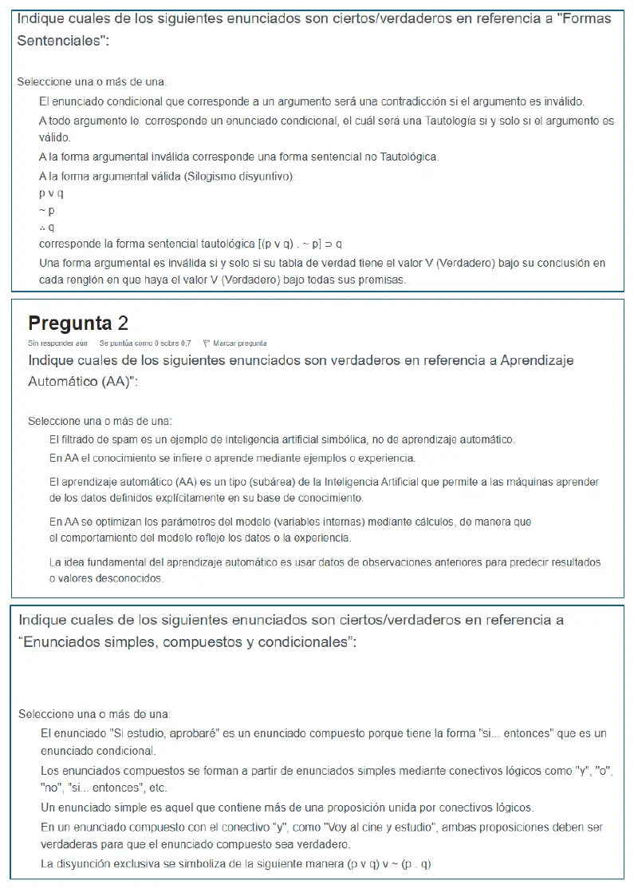
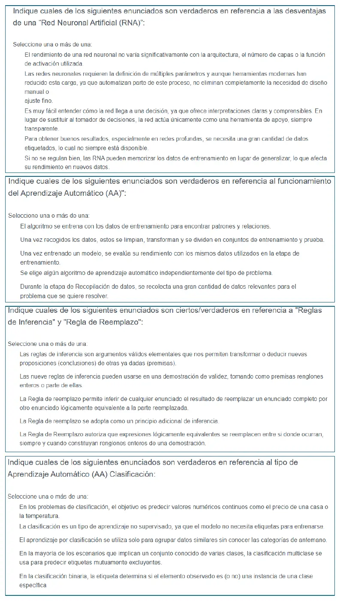
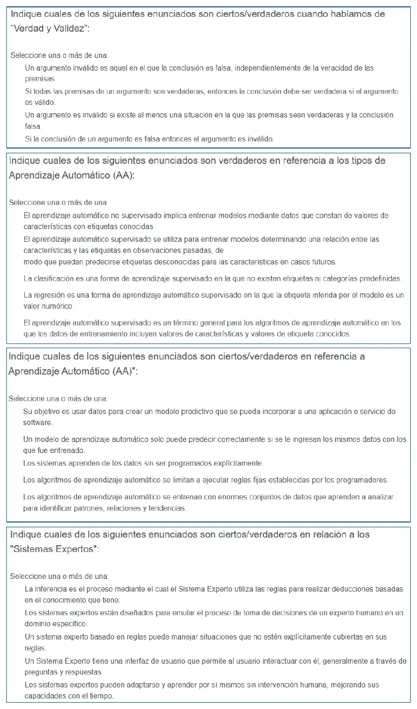
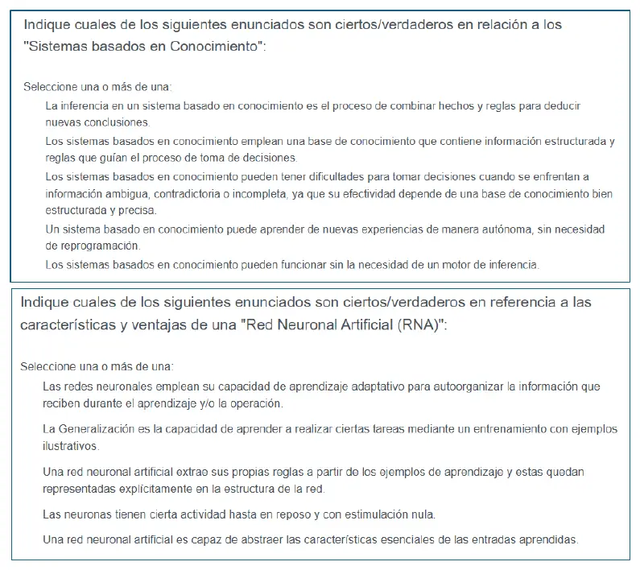
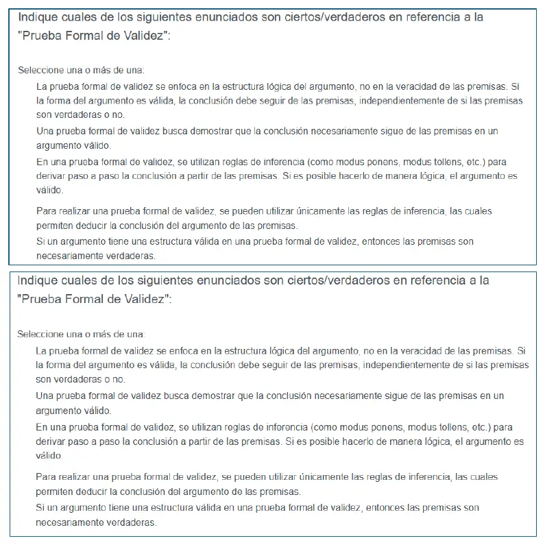

Aprobación directa, teoría, 15/10/2025
Aprobación directa, 15/10/2025
Enunciado










Propuesta de respuesta
Respuesta no verificada. La propuso Luta Studios con inteligencia artificial y ningún docente la revisó. Puede tener errores.
Cada recuadro dice «Seleccione una o más de una». Van las afirmaciones resumidas, en el orden de la hoja, con las que se marcan.
1. Formas sentenciales. Se marcan la 2, la 3 y la 4.
| Afirmación | ¿Se marca? | Por qué |
|---|---|---|
| El condicional de un argumento inválido es una contradicción | No | Solo deja de ser tautología. El de la afirmación del consecuente, , es contingente, con un solo renglón F |
| A todo argumento le corresponde un condicional, tautología si y solo si el argumento es válido | Sí | Es la definición del apunte, unidad 3, página 33 |
| A la forma argumental inválida le corresponde una forma sentencial no tautológica | Sí | Sale del mismo «si y solo si» |
| Al silogismo disyuntivo le corresponde la tautología | Sí | Es el ejemplo del apunte, y su tabla da T en los cuatro renglones |
| Es inválida si y solo si tiene T bajo la conclusión en cada renglón con T en todas las premisas | No | Esa es la condición para que sea válida |
2. Aprendizaje automático. Se marcan la 2, la 4 y la 5.
| Afirmación | ¿Se marca? | Por qué |
|---|---|---|
| El filtrado de spam es IA simbólica y no aprendizaje automático | No | Decidir si un mensaje es spam o no es una clasificación binaria, que se aprende de ejemplos con etiqueta |
| El conocimiento se aprende con ejemplos o experiencia | Sí | El modelo se arma con datos pasados |
| Aprende de los datos definidos explícitamente en su base de conocimiento | No | Es «aprender de los datos sin programarlo explícitamente». La base de conocimiento es de los sistemas expertos |
| Se optimizan los parámetros del modelo para que refleje los datos | Sí | Definir es el entrenamiento, y el modelo final son los pesos que mejor predicen |
| Usa datos de observaciones anteriores para predecir valores desconocidos | Sí | Es la idea del resumen, «usar datos pasados para predecir resultados desconocidos» |
3. Enunciados simples, compuestos y condicionales. Se marcan la 1, la 2 y la 4.
| Afirmación | ¿Se marca? | Por qué |
|---|---|---|
| «Si estudio, aprobaré» es compuesto, porque es un condicional | Sí | Contiene otros enunciados como componentes |
| Los compuestos se forman con simples y conectivos | Sí | «Todo enunciado compuesto contiene otro enunciado como componente» |
| Un simple tiene más de una proposición unida por conectivos | No | El simple «no contiene otro enunciado como parte componente» |
| En «Voy al cine y estudio», las dos tienen que ser verdaderas | Sí | La conjunción es verdadera solo si los dos lo son |
| La exclusiva es | No | Es . La de la hoja da T en los cuatro renglones, así que es una tautología |
4. Desventajas de una red neuronal. Se marcan la 2, la 4 y la 5.
| Afirmación | ¿Se marca? | Por qué |
|---|---|---|
| El rendimiento casi no depende de la arquitectura, las capas o la activación | No | Una desventaja es justamente que hay que definir muchos parámetros |
| Hay que definir muchos parámetros y siempre queda ajuste a mano | Sí | Es la desventaja del apunte |
| Es fácil entender cómo decide, y nunca reemplaza al que decide | No | Es una caja negra que «se puede convertir en el "tomador" de la decisión» |
| Hace falta una gran cantidad de datos etiquetados | Sí | El resumen de 2026 la suma como desventaja |
| Puede memorizar el entrenamiento en vez de generalizar | Sí | Es el sobreajuste, que suma el resumen de 2026 |
5. Cómo funciona el aprendizaje automático. Se marcan la 1, la 2 y la 5.
| Afirmación | ¿Se marca? | Por qué |
|---|---|---|
| El algoritmo se entrena con los datos de entrenamiento para encontrar patrones | Sí | Es el paso de entrenamiento |
| Los datos se limpian, se transforman y se dividen en entrenamiento y prueba | Sí | Es el paso de preparación |
| Se evalúa con los mismos datos del entrenamiento | No | Para eso se separó el conjunto de prueba. Con los mismos datos no se ve si el modelo sirve para datos nuevos |
| El algoritmo se elige sin importar el tipo de problema | No | Se elige «según el tipo de problema» |
| En la recopilación se juntan muchos datos relevantes | Sí | Es el primer paso |
6. Reglas de inferencia y regla de reemplazo. Se marcan la 1 y la 4.
| Afirmación | ¿Se marca? | Por qué |
|---|---|---|
| Las reglas de inferencia son argumentos válidos elementales que permiten deducir conclusiones | Sí | Cada paso de la prueba formal «se sigue de los precedentes por un argumento válido elemental» |
| Las nueve reglas se pueden aplicar a renglones enteros o a partes | No | «Las primeras nueve pueden aplicarse a renglones enteros» |
| El reemplazo cambia un enunciado completo por otro equivalente a la parte reemplazada | No | El apunte dice «reemplazar todo o parte de ese enunciado» |
| La regla de reemplazo se adopta como un principio adicional de inferencia | Sí | Es textual del apunte |
| El reemplazo vale solo si las expresiones son renglones enteros | No | Las diez últimas se aplican «a renglones enteros o partes de renglones» |
7. Clasificación. Se marcan la 4 y la 5.
| Afirmación | ¿Se marca? | Por qué |
|---|---|---|
| Predice valores numéricos continuos, como un precio | No | Eso es regresión |
| Es aprendizaje no supervisado, sin etiquetas | No | Es supervisado, con etiqueta |
| Solo agrupa datos parecidos sin categorías previas | No | Eso es clustering |
| La multiclase predice etiquetas mutuamente excluyentes entre varias clases conocidas | Sí | La clasificación es binaria o multiclase |
| En la binaria, la etiqueta dice si es o no de una clase | Sí | Como un vuelo demorado o no |
8. Verdad y validez. Se marcan la 2 y la 3.
| Afirmación | ¿Se marca? | Por qué |
|---|---|---|
| Es inválido si la conclusión es falsa, sin importar las premisas | No | «La falsedad de su conclusión no garantiza la invalidez de un argumento» |
| Si es válido y las premisas son verdaderas, la conclusión es verdadera | Sí | Es la definición de argumento válido |
| Es inválido si hay al menos un caso con premisas verdaderas y conclusión falsa | Sí | Es la definición de forma inválida |
| Si la conclusión es falsa, el argumento es inválido | No | Puede ser válido con alguna premisa falsa. El modus ponens con y falsas tiene la conclusión falsa y sigue siendo válido |
9. Tipos de aprendizaje automático. Se marcan la 2, la 4 y la 5.
| Afirmación | ¿Se marca? | Por qué |
|---|---|---|
| El no supervisado usa datos con etiquetas conocidas | No | El no supervisado trabaja sin etiqueta |
| El supervisado relaciona características y etiquetas pasadas para predecir etiquetas futuras | Sí | Es el supervisado, con etiqueta |
| La clasificación es supervisada sin etiquetas ni categorías | No | Lleva etiqueta y categorías |
| La regresión es supervisada y predice un valor numérico | Sí | Como el valor de venta de una propiedad |
| Supervisado es todo algoritmo con características y etiquetas conocidas en el entrenamiento | Sí | Es la definición |
10. Aprendizaje automático. Se marcan la 1, la 3 y la 5.
| Afirmación | ¿Se marca? | Por qué |
|---|---|---|
| Busca un modelo predictivo que se pueda incorporar a una aplicación o servicio | Sí | El resumen dice que busca un modelo predictivo que se pueda integrar en una app o servicio |
| Solo predice bien con los mismos datos del entrenamiento | No | La inferencia es usarlo sobre datos nuevos |
| Aprende de los datos sin ser programado explícitamente | Sí | Es la definición |
| Ejecuta reglas fijas puestas por los programadores | No | Eso es lo contrario de aprender de los datos |
| Se entrena con grandes conjuntos de datos para hallar patrones | Sí | Es el entrenamiento |
11. Sistemas expertos. Se marcan la 1, la 2 y la 4.
| Afirmación | ¿Se marca? | Por qué |
|---|---|---|
| La inferencia usa las reglas para deducir con el conocimiento que tiene | Sí | El motor de inferencia «controla al resto del sistema en sus funciones deductivas» |
| Emula la decisión de un experto humano en un dominio | Sí | Tiene que ser «indistinguible por su comportamiento de un experto humano» |
| Maneja situaciones que sus reglas no cubren | No | Razona con el conocimiento que tiene en su base. Lo que no está ahí, no lo sabe |
| Tiene una interfaz con preguntas y respuestas | Sí | La figura 4.3 pone la interfaz entre el usuario y el motor, y Hayes Roth le pide explicar por qué pregunta |
| Se adapta y aprende solo, sin intervención humana | No | El conocimiento lo organiza el ingeniero del conocimiento con el experto |
12. Sistemas basados en conocimiento. Se marcan la 1, la 2 y la 3.
| Afirmación | ¿Se marca? | Por qué |
|---|---|---|
| La inferencia combina hechos y reglas para sacar conclusiones nuevas | Sí | Base de hechos, base de conocimiento y motor de inferencia |
| Usan una base de conocimiento con información estructurada y reglas | Sí | La base de conocimiento tiene el conocimiento específico y procedimental |
| Les cuesta la información ambigua, contradictoria o incompleta | Sí | Los sistemas convencionales necesitan información completa y consistente, y por eso aparece el razonamiento con incertidumbre |
| Aprenden solos de experiencias nuevas, sin reprogramar | No | El conocimiento se carga y se verifica desde la ingeniería del conocimiento |
| Funcionan sin motor de inferencia | No | El motor es uno de los tres componentes |
13. Características y ventajas de una red neuronal. Se marcan la 1, la 4 y la 5.
| Afirmación | ¿Se marca? | Por qué |
|---|---|---|
| Usa el aprendizaje adaptativo para autoorganizar la información | Sí | Aprendizaje adaptativo y auto-organización son ventajas |
| La generalización es aprender una tarea con ejemplos ilustrativos | No | Eso es aprender. Generalizar es responder bien a datos distintos a los del aprendizaje |
| Extrae sus reglas y quedan representadas explícitamente | No | Las reglas quedan en las conexiones, «no representadas explícitamente» |
| Las neuronas tienen actividad aun en reposo y con estímulo nulo | Sí | Es lo que muestra la sigmoide, que vale 0,5 con entrada nula |
| Abstrae las características esenciales de lo aprendido | Sí | Es la abstracción o tolerancia al ruido |
14 y 15. Prueba formal de validez. Los dos recuadros son iguales. Se marcan la 1, la 2 y la 3.
| Afirmación | ¿Se marca? | Por qué |
|---|---|---|
| Mira la estructura y no la verdad de las premisas | Sí | La validez es de la forma. Las premisas pueden ser falsas |
| Busca demostrar que la conclusión se sigue necesariamente de las premisas | Sí | Es la definición |
| Usa reglas como el modus ponens paso a paso, y si se llega, es válido | Sí | Cada paso es un argumento válido elemental |
| Usa únicamente las reglas de inferencia | No | También vale la regla de reemplazo, y además están la demostración condicional y la indirecta |
| Si es válido, las premisas son verdaderas | No | «La validez de un argumento no garantiza la verdad de su conclusión», y tampoco de las premisas |
Respuesta no verificada. Puede tener errores.
Se armó con la página de aprobación directa, secciones Verdad y validez, Enunciados simples y compuestos, Formas sentenciales, Prueba formal de validez, Aprendizaje automático, Redes neuronales y Sistemas expertos, y la del final, Razonamiento con incertidumbre. Las tablas de verdad de los recuadros 1, 3 y 8 se comprobaron con un programa.
Quedó en duda: No hay corrección oficial y la hoja avisa que las tildes del alumno pueden estar mal, así que no se usaron. Todo lo de aprendizaje automático sale de un resumen de alumno, y varias opciones hablan de cosas que ese resumen no trae, como el spam, los conjuntos de prueba o las herramientas modernas. En el recuadro 6, la tercera la tomé como falsa porque cambia «todo o parte» por «un enunciado completo», pero se puede leer como un caso permitido. La tercera del 11 y la tercera del 12 no tienen una frase del apunte que las conteste directo.
¿Cómo te fue?
Marcá cada tema del examen.
- LógicaEquivalencia material y lógica, en Aprobación directa
- Aprendizaje automáticoTipos, en Aprobación directa
- Redes neuronalesCaracterísticas, en Aprobación directa
- Sistemas expertosVisión estructural, en Aprobación directa